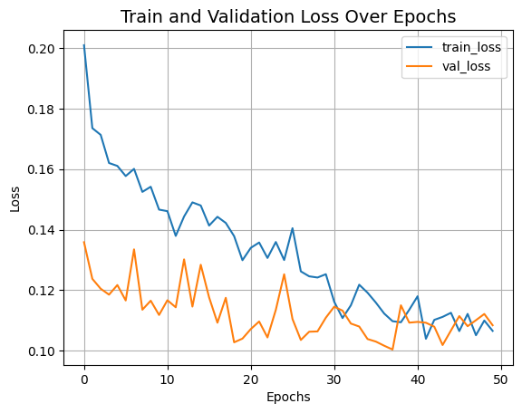
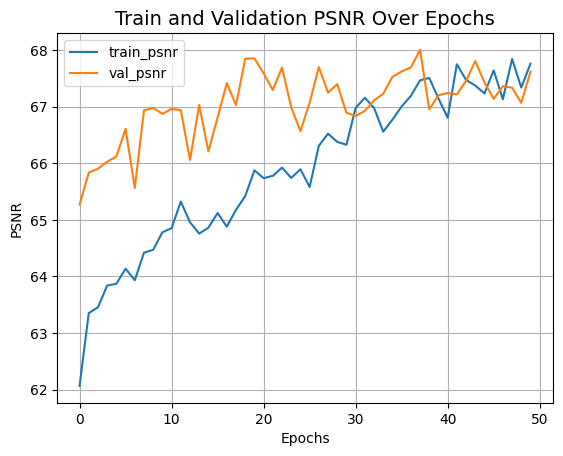
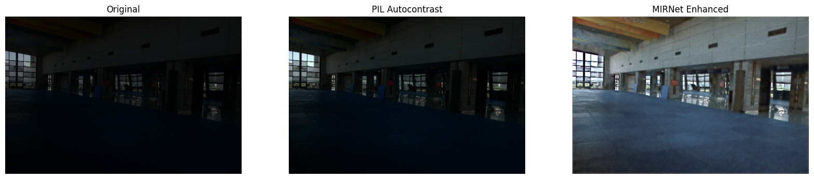
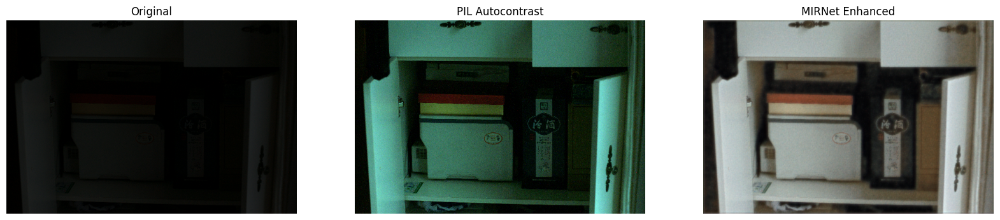
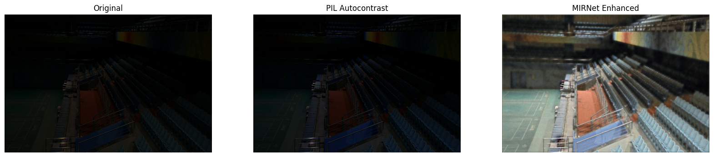
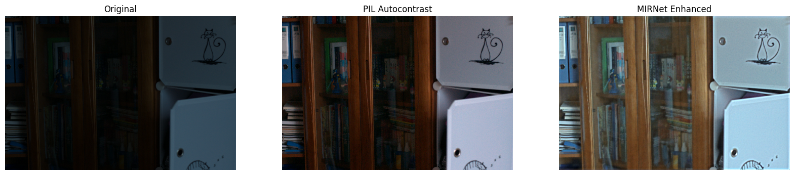
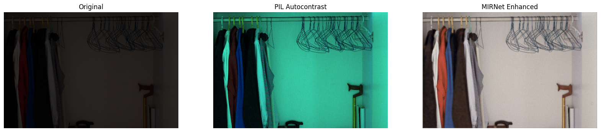
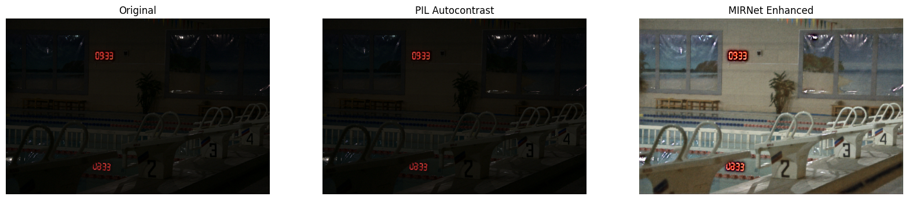

Low-light image enhancement using MIRNet
Author: Soumik Rakshit
Date created: 2021/09/11
Last modified: 2023/07/15
Description: Implementing the MIRNet architecture for low-light image enhancement.

Introduction
With the goal of recovering high-quality image content from its degraded version, image restoration enjoys numerous applications, such as in photography, security, medical imaging, and remote sensing. In this example, we implement the MIRNet model for low-light image enhancement, a fully-convolutional architecture that learns an enriched set of features that combines contextual information from multiple scales, while simultaneously preserving the high-resolution spatial details.
References:
- Learning Enriched Features for Real Image Restoration and Enhancement
- The Retinex Theory of Color Vision
- Two deterministic half-quadratic regularization algorithms for computed imaging
Downloading LOLDataset
The LoL Dataset has been created for low-light image enhancement. It provides 485 images for training and 15 for testing. Each image pair in the dataset consists of a low-light input image and its corresponding well-exposed reference image.
import os
os.environ["KERAS_BACKEND"] = "tensorflow"
import random
import numpy as np
from glob import glob
from PIL import Image, ImageOps
import matplotlib.pyplot as plt
import keras
from keras import layers
import tensorflow as tf
!wget https://huggingface.co/datasets/geekyrakshit/LoL-Dataset/resolve/main/lol_dataset.zip
!unzip -q lol_dataset.zip && rm lol_dataset.zip
--2023-11-10 23:10:00-- https://huggingface.co/datasets/geekyrakshit/LoL-Dataset/resolve/main/lol_dataset.zip
Resolving huggingface.co (huggingface.co)... 3.163.189.74, 3.163.189.37, 3.163.189.114, ...
Connecting to huggingface.co (huggingface.co)|3.163.189.74|:443... connected.
HTTP request sent, awaiting response... 302 Found
Location: https://cdn-lfs.huggingface.co/repos/d9/09/d909ef7668bb417b7065a311bd55a3084cc83a1f918e13cb41c5503328432db2/419fddc48958cd0f5599939ee0248852a37ceb8bb738c9b9525e95b25a89de9a?response-content-disposition=attachment%3B+filename*%3DUTF-8%27%27lol_dataset.zip%3B+filename%3D%22lol_dataset.zip%22%3B&response-content-type=application%2Fzip&Expires=1699917000&Policy=eyJTdGF0ZW1lbnQiOlt7IkNvbmRpdGlvbiI6eyJEYXRlTGVzc1RoYW4iOnsiQVdTOkVwb2NoVGltZSI6MTY5OTkxNzAwMH19LCJSZXNvdXJjZSI6Imh0dHBzOi8vY2RuLWxmcy5odWdnaW5nZmFjZS5jby9yZXBvcy9kOS8wOS9kOTA5ZWY3NjY4YmI0MTdiNzA2NWEzMTFiZDU1YTMwODRjYzgzYTFmOTE4ZTEzY2I0MWM1NTAzMzI4NDMyZGIyLzQxOWZkZGM0ODk1OGNkMGY1NTk5OTM5ZWUwMjQ4ODUyYTM3Y2ViOGJiNzM4YzliOTUyNWU5NWIyNWE4OWRlOWE%7EcmVzcG9uc2UtY29udGVudC1kaXNwb3NpdGlvbj0qJnJlc3BvbnNlLWNvbnRlbnQtdHlwZT0qIn1dfQ__&Signature=xyZ1oUBOnWdy6-vCAFzqZsDMetsPu6OSluyOoTS%7EKRZ6lvAy8yUwQgp5WjcZGJ7Jnex0IdnsPiUzsxaxjM-eZjUcQGPdGj4WhSV5DUBxr8xkwTEospYSg1fX%7EE2I1KkP9gBsXvinsKIOAZzchbg9f28xxdlvTbZ0h4ndcUfbDPknwlU1CIZNa5qjU6NqLMH2bPQmI1AIVau2DgQC%7E1n2dgTZsMfHTVmoM2ivsAl%7E9XgQ3m247ke2aj5BmgssZF52VWKTE-vwYDtbuiem73pS6gS-dZlmXYPE1OSRr2tsDo1cgPEBBtuK3hEnYcOq8jjEZk3AEAbFAJoHKLVIERZ30g__&Key-Pair-Id=KVTP0A1DKRTAX [following]
--2023-11-10 23:10:00-- https://cdn-lfs.huggingface.co/repos/d9/09/d909ef7668bb417b7065a311bd55a3084cc83a1f918e13cb41c5503328432db2/419fddc48958cd0f5599939ee0248852a37ceb8bb738c9b9525e95b25a89de9a?response-content-disposition=attachment%3B+filename*%3DUTF-8%27%27lol_dataset.zip%3B+filename%3D%22lol_dataset.zip%22%3B&response-content-type=application%2Fzip&Expires=1699917000&Policy=eyJTdGF0ZW1lbnQiOlt7IkNvbmRpdGlvbiI6eyJEYXRlTGVzc1RoYW4iOnsiQVdTOkVwb2NoVGltZSI6MTY5OTkxNzAwMH19LCJSZXNvdXJjZSI6Imh0dHBzOi8vY2RuLWxmcy5odWdnaW5nZmFjZS5jby9yZXBvcy9kOS8wOS9kOTA5ZWY3NjY4YmI0MTdiNzA2NWEzMTFiZDU1YTMwODRjYzgzYTFmOTE4ZTEzY2I0MWM1NTAzMzI4NDMyZGIyLzQxOWZkZGM0ODk1OGNkMGY1NTk5OTM5ZWUwMjQ4ODUyYTM3Y2ViOGJiNzM4YzliOTUyNWU5NWIyNWE4OWRlOWE%7EcmVzcG9uc2UtY29udGVudC1kaXNwb3NpdGlvbj0qJnJlc3BvbnNlLWNvbnRlbnQtdHlwZT0qIn1dfQ__&Signature=xyZ1oUBOnWdy6-vCAFzqZsDMetsPu6OSluyOoTS%7EKRZ6lvAy8yUwQgp5WjcZGJ7Jnex0IdnsPiUzsxaxjM-eZjUcQGPdGj4WhSV5DUBxr8xkwTEospYSg1fX%7EE2I1KkP9gBsXvinsKIOAZzchbg9f28xxdlvTbZ0h4ndcUfbDPknwlU1CIZNa5qjU6NqLMH2bPQmI1AIVau2DgQC%7E1n2dgTZsMfHTVmoM2ivsAl%7E9XgQ3m247ke2aj5BmgssZF52VWKTE-vwYDtbuiem73pS6gS-dZlmXYPE1OSRr2tsDo1cgPEBBtuK3hEnYcOq8jjEZk3AEAbFAJoHKLVIERZ30g__&Key-Pair-Id=KVTP0A1DKRTAX
Resolving cdn-lfs.huggingface.co (cdn-lfs.huggingface.co)... 108.138.94.122, 108.138.94.14, 108.138.94.25, ...
Connecting to cdn-lfs.huggingface.co (cdn-lfs.huggingface.co)|108.138.94.122|:443... connected.
HTTP request sent, awaiting response... 200 OK
Length: 347171015 (331M) [application/zip]
Saving to: ‘lol_dataset.zip’
lol_dataset.zip 100%[===================>] 331.09M 316MB/s in 1.0s
2023-11-10 23:10:01 (316 MB/s) - ‘lol_dataset.zip’ saved [347171015/347171015]
Creating a TensorFlow Dataset
We use 300 image pairs from the LoL Dataset's training set for training,
and we use the remaining 185 image pairs for validation.
We generate random crops of size 128 x 128 from the image pairs to be
used for both training and validation.
random.seed(10)
IMAGE_SIZE = 128
BATCH_SIZE = 4
MAX_TRAIN_IMAGES = 300
def read_image(image_path):
image = tf.io.read_file(image_path)
image = tf.image.decode_png(image, channels=3)
image.set_shape([None, None, 3])
image = tf.cast(image, dtype=tf.float32) / 255.0
return image
def random_crop(low_image, enhanced_image):
low_image_shape = tf.shape(low_image)[:2]
low_w = tf.random.uniform(
shape=(), maxval=low_image_shape[1] - IMAGE_SIZE + 1, dtype=tf.int32
)
low_h = tf.random.uniform(
shape=(), maxval=low_image_shape[0] - IMAGE_SIZE + 1, dtype=tf.int32
)
low_image_cropped = low_image[
low_h : low_h + IMAGE_SIZE, low_w : low_w + IMAGE_SIZE
]
enhanced_image_cropped = enhanced_image[
low_h : low_h + IMAGE_SIZE, low_w : low_w + IMAGE_SIZE
]
# in order to avoid `NONE` during shape inference
low_image_cropped.set_shape([IMAGE_SIZE, IMAGE_SIZE, 3])
enhanced_image_cropped.set_shape([IMAGE_SIZE, IMAGE_SIZE, 3])
return low_image_cropped, enhanced_image_cropped
def load_data(low_light_image_path, enhanced_image_path):
low_light_image = read_image(low_light_image_path)
enhanced_image = read_image(enhanced_image_path)
low_light_image, enhanced_image = random_crop(low_light_image, enhanced_image)
return low_light_image, enhanced_image
def get_dataset(low_light_images, enhanced_images):
dataset = tf.data.Dataset.from_tensor_slices((low_light_images, enhanced_images))
dataset = dataset.map(load_data, num_parallel_calls=tf.data.AUTOTUNE)
dataset = dataset.batch(BATCH_SIZE, drop_remainder=True)
return dataset
train_low_light_images = sorted(glob("./lol_dataset/our485/low/*"))[:MAX_TRAIN_IMAGES]
train_enhanced_images = sorted(glob("./lol_dataset/our485/high/*"))[:MAX_TRAIN_IMAGES]
val_low_light_images = sorted(glob("./lol_dataset/our485/low/*"))[MAX_TRAIN_IMAGES:]
val_enhanced_images = sorted(glob("./lol_dataset/our485/high/*"))[MAX_TRAIN_IMAGES:]
test_low_light_images = sorted(glob("./lol_dataset/eval15/low/*"))
test_enhanced_images = sorted(glob("./lol_dataset/eval15/high/*"))
train_dataset = get_dataset(train_low_light_images, train_enhanced_images)
val_dataset = get_dataset(val_low_light_images, val_enhanced_images)
print("Train Dataset:", train_dataset.element_spec)
print("Val Dataset:", val_dataset.element_spec)
Train Dataset: (TensorSpec(shape=(4, 128, 128, 3), dtype=tf.float32, name=None), TensorSpec(shape=(4, 128, 128, 3), dtype=tf.float32, name=None))
Val Dataset: (TensorSpec(shape=(4, 128, 128, 3), dtype=tf.float32, name=None), TensorSpec(shape=(4, 128, 128, 3), dtype=tf.float32, name=None))
MIRNet Model
Here are the main features of the MIRNet model:
- A feature extraction model that computes a complementary set of features across multiple spatial scales, while maintaining the original high-resolution features to preserve precise spatial details.
- A regularly repeated mechanism for information exchange, where the features across multi-resolution branches are progressively fused together for improved representation learning.
- A new approach to fuse multi-scale features using a selective kernel network that dynamically combines variable receptive fields and faithfully preserves the original feature information at each spatial resolution.
- A recursive residual design that progressively breaks down the input signal in order to simplify the overall learning process, and allows the construction of very deep networks.

Selective Kernel Feature Fusion
The Selective Kernel Feature Fusion or SKFF module performs dynamic adjustment of receptive fields via two operations: Fuse and Select. The Fuse operator generates global feature descriptors by combining the information from multi-resolution streams. The Select operator uses these descriptors to recalibrate the feature maps (of different streams) followed by their aggregation.
Fuse: The SKFF receives inputs from three parallel convolution streams carrying different scales of information. We first combine these multi-scale features using an element-wise sum, on which we apply Global Average Pooling (GAP) across the spatial dimension. Next, we apply a channel- downscaling convolution layer to generate a compact feature representation which passes through three parallel channel-upscaling convolution layers (one for each resolution stream) and provides us with three feature descriptors.
Select: This operator applies the softmax function to the feature descriptors to obtain the corresponding activations that are used to adaptively recalibrate multi-scale feature maps. The aggregated features are defined as the sum of product of the corresponding multi-scale feature and the feature descriptor.

def selective_kernel_feature_fusion(
multi_scale_feature_1, multi_scale_feature_2, multi_scale_feature_3
):
channels = list(multi_scale_feature_1.shape)[-1]
combined_feature = layers.Add()(
[multi_scale_feature_1, multi_scale_feature_2, multi_scale_feature_3]
)
gap = layers.GlobalAveragePooling2D()(combined_feature)
channel_wise_statistics = layers.Reshape((1, 1, channels))(gap)
compact_feature_representation = layers.Conv2D(
filters=channels // 8, kernel_size=(1, 1), activation="relu"
)(channel_wise_statistics)
feature_descriptor_1 = layers.Conv2D(
channels, kernel_size=(1, 1), activation="softmax"
)(compact_feature_representation)
feature_descriptor_2 = layers.Conv2D(
channels, kernel_size=(1, 1), activation="softmax"
)(compact_feature_representation)
feature_descriptor_3 = layers.Conv2D(
channels, kernel_size=(1, 1), activation="softmax"
)(compact_feature_representation)
feature_1 = multi_scale_feature_1 * feature_descriptor_1
feature_2 = multi_scale_feature_2 * feature_descriptor_2
feature_3 = multi_scale_feature_3 * feature_descriptor_3
aggregated_feature = layers.Add()([feature_1, feature_2, feature_3])
return aggregated_feature
Dual Attention Unit
The Dual Attention Unit or DAU is used to extract features in the convolutional streams. While the SKFF block fuses information across multi-resolution branches, we also need a mechanism to share information within a feature tensor, both along the spatial and the channel dimensions which is done by the DAU block. The DAU suppresses less useful features and only allows more informative ones to pass further. This feature recalibration is achieved by using Channel Attention and Spatial Attention mechanisms.
The Channel Attention branch exploits the inter-channel relationships of the convolutional feature maps by applying squeeze and excitation operations. Given a feature map, the squeeze operation applies Global Average Pooling across spatial dimensions to encode global context, thus yielding a feature descriptor. The excitation operator passes this feature descriptor through two convolutional layers followed by the sigmoid gating and generates activations. Finally, the output of Channel Attention branch is obtained by rescaling the input feature map with the output activations.
The Spatial Attention branch is designed to exploit the inter-spatial dependencies of convolutional features. The goal of Spatial Attention is to generate a spatial attention map and use it to recalibrate the incoming features. To generate the spatial attention map, the Spatial Attention branch first independently applies Global Average Pooling and Max Pooling operations on input features along the channel dimensions and concatenates the outputs to form a resultant feature map which is then passed through a convolution and sigmoid activation to obtain the spatial attention map. This spatial attention map is then used to rescale the input feature map.

class ChannelPooling(layers.Layer):
def __init__(self, axis=-1, *args, **kwargs):
super().__init__(*args, **kwargs)
self.axis = axis
self.concat = layers.Concatenate(axis=self.axis)
def call(self, inputs):
average_pooling = tf.expand_dims(tf.reduce_mean(inputs, axis=-1), axis=-1)
max_pooling = tf.expand_dims(tf.reduce_max(inputs, axis=-1), axis=-1)
return self.concat([average_pooling, max_pooling])
def get_config(self):
config = super().get_config()
config.update({"axis": self.axis})
def spatial_attention_block(input_tensor):
compressed_feature_map = ChannelPooling(axis=-1)(input_tensor)
feature_map = layers.Conv2D(1, kernel_size=(1, 1))(compressed_feature_map)
feature_map = keras.activations.sigmoid(feature_map)
return input_tensor * feature_map
def channel_attention_block(input_tensor):
channels = list(input_tensor.shape)[-1]
average_pooling = layers.GlobalAveragePooling2D()(input_tensor)
feature_descriptor = layers.Reshape((1, 1, channels))(average_pooling)
feature_activations = layers.Conv2D(
filters=channels // 8, kernel_size=(1, 1), activation="relu"
)(feature_descriptor)
feature_activations = layers.Conv2D(
filters=channels, kernel_size=(1, 1), activation="sigmoid"
)(feature_activations)
return input_tensor * feature_activations
def dual_attention_unit_block(input_tensor):
channels = list(input_tensor.shape)[-1]
feature_map = layers.Conv2D(
channels, kernel_size=(3, 3), padding="same", activation="relu"
)(input_tensor)
feature_map = layers.Conv2D(channels, kernel_size=(3, 3), padding="same")(
feature_map
)
channel_attention = channel_attention_block(feature_map)
spatial_attention = spatial_attention_block(feature_map)
concatenation = layers.Concatenate(axis=-1)([channel_attention, spatial_attention])
concatenation = layers.Conv2D(channels, kernel_size=(1, 1))(concatenation)
return layers.Add()([input_tensor, concatenation])
Multi-Scale Residual Block
The Multi-Scale Residual Block is capable of generating a spatially-precise output by maintaining high-resolution representations, while receiving rich contextual information from low-resolutions. The MRB consists of multiple (three in this paper) fully-convolutional streams connected in parallel. It allows information exchange across parallel streams in order to consolidate the high-resolution features with the help of low-resolution features, and vice versa. The MIRNet employs a recursive residual design (with skip connections) to ease the flow of information during the learning process. In order to maintain the residual nature of our architecture, residual resizing modules are used to perform downsampling and upsampling operations that are used in the Multi-scale Residual Block.

# Recursive Residual Modules
def down_sampling_module(input_tensor):
channels = list(input_tensor.shape)[-1]
main_branch = layers.Conv2D(channels, kernel_size=(1, 1), activation="relu")(
input_tensor
)
main_branch = layers.Conv2D(
channels, kernel_size=(3, 3), padding="same", activation="relu"
)(main_branch)
main_branch = layers.MaxPooling2D()(main_branch)
main_branch = layers.Conv2D(channels * 2, kernel_size=(1, 1))(main_branch)
skip_branch = layers.MaxPooling2D()(input_tensor)
skip_branch = layers.Conv2D(channels * 2, kernel_size=(1, 1))(skip_branch)
return layers.Add()([skip_branch, main_branch])
def up_sampling_module(input_tensor):
channels = list(input_tensor.shape)[-1]
main_branch = layers.Conv2D(channels, kernel_size=(1, 1), activation="relu")(
input_tensor
)
main_branch = layers.Conv2D(
channels, kernel_size=(3, 3), padding="same", activation="relu"
)(main_branch)
main_branch = layers.UpSampling2D()(main_branch)
main_branch = layers.Conv2D(channels // 2, kernel_size=(1, 1))(main_branch)
skip_branch = layers.UpSampling2D()(input_tensor)
skip_branch = layers.Conv2D(channels // 2, kernel_size=(1, 1))(skip_branch)
return layers.Add()([skip_branch, main_branch])
# MRB Block
def multi_scale_residual_block(input_tensor, channels):
# features
level1 = input_tensor
level2 = down_sampling_module(input_tensor)
level3 = down_sampling_module(level2)
# DAU
level1_dau = dual_attention_unit_block(level1)
level2_dau = dual_attention_unit_block(level2)
level3_dau = dual_attention_unit_block(level3)
# SKFF
level1_skff = selective_kernel_feature_fusion(
level1_dau,
up_sampling_module(level2_dau),
up_sampling_module(up_sampling_module(level3_dau)),
)
level2_skff = selective_kernel_feature_fusion(
down_sampling_module(level1_dau),
level2_dau,
up_sampling_module(level3_dau),
)
level3_skff = selective_kernel_feature_fusion(
down_sampling_module(down_sampling_module(level1_dau)),
down_sampling_module(level2_dau),
level3_dau,
)
# DAU 2
level1_dau_2 = dual_attention_unit_block(level1_skff)
level2_dau_2 = up_sampling_module((dual_attention_unit_block(level2_skff)))
level3_dau_2 = up_sampling_module(
up_sampling_module(dual_attention_unit_block(level3_skff))
)
# SKFF 2
skff_ = selective_kernel_feature_fusion(level1_dau_2, level2_dau_2, level3_dau_2)
conv = layers.Conv2D(channels, kernel_size=(3, 3), padding="same")(skff_)
return layers.Add()([input_tensor, conv])
MIRNet Model
def recursive_residual_group(input_tensor, num_mrb, channels):
conv1 = layers.Conv2D(channels, kernel_size=(3, 3), padding="same")(input_tensor)
for _ in range(num_mrb):
conv1 = multi_scale_residual_block(conv1, channels)
conv2 = layers.Conv2D(channels, kernel_size=(3, 3), padding="same")(conv1)
return layers.Add()([conv2, input_tensor])
def mirnet_model(num_rrg, num_mrb, channels):
input_tensor = keras.Input(shape=[None, None, 3])
x1 = layers.Conv2D(channels, kernel_size=(3, 3), padding="same")(input_tensor)
for _ in range(num_rrg):
x1 = recursive_residual_group(x1, num_mrb, channels)
conv = layers.Conv2D(3, kernel_size=(3, 3), padding="same")(x1)
output_tensor = layers.Add()([input_tensor, conv])
return keras.Model(input_tensor, output_tensor)
model = mirnet_model(num_rrg=3, num_mrb=2, channels=64)
Training
- We train MIRNet using Charbonnier Loss as the loss function and Adam
Optimizer with a learning rate of
1e-4. - We use Peak Signal Noise Ratio or PSNR as a metric which is an expression for the ratio between the maximum possible value (power) of a signal and the power of distorting noise that affects the quality of its representation.
def charbonnier_loss(y_true, y_pred):
return tf.reduce_mean(tf.sqrt(tf.square(y_true - y_pred) + tf.square(1e-3)))
def peak_signal_noise_ratio(y_true, y_pred):
return tf.image.psnr(y_pred, y_true, max_val=255.0)
optimizer = keras.optimizers.Adam(learning_rate=1e-4)
model.compile(
optimizer=optimizer,
loss=charbonnier_loss,
metrics=[peak_signal_noise_ratio],
)
history = model.fit(
train_dataset,
validation_data=val_dataset,
epochs=50,
callbacks=[
keras.callbacks.ReduceLROnPlateau(
monitor="val_peak_signal_noise_ratio",
factor=0.5,
patience=5,
verbose=1,
min_delta=1e-7,
mode="max",
)
],
)
def plot_history(value, name):
plt.plot(history.history[value], label=f"train_{name.lower()}")
plt.plot(history.history[f"val_{value}"], label=f"val_{name.lower()}")
plt.xlabel("Epochs")
plt.ylabel(name)
plt.title(f"Train and Validation {name} Over Epochs", fontsize=14)
plt.legend()
plt.grid()
plt.show()
plot_history("loss", "Loss")
plot_history("peak_signal_noise_ratio", "PSNR")
Epoch 1/50
WARNING: All log messages before absl::InitializeLog() is called are written to STDERR
I0000 00:00:1699658204.480352 77759 device_compiler.h:187] Compiled cluster using XLA! This line is logged at most once for the lifetime of the process.
75/75 ━━━━━━━━━━━━━━━━━━━━ 445s 686ms/step - loss: 0.2162 - peak_signal_noise_ratio: 61.5549 - val_loss: 0.1358 - val_peak_signal_noise_ratio: 65.2699 - learning_rate: 1.0000e-04
Epoch 2/50
75/75 ━━━━━━━━━━━━━━━━━━━━ 29s 385ms/step - loss: 0.1745 - peak_signal_noise_ratio: 63.1785 - val_loss: 0.1237 - val_peak_signal_noise_ratio: 65.8360 - learning_rate: 1.0000e-04
Epoch 3/50
75/75 ━━━━━━━━━━━━━━━━━━━━ 29s 386ms/step - loss: 0.1681 - peak_signal_noise_ratio: 63.4903 - val_loss: 0.1205 - val_peak_signal_noise_ratio: 65.9048 - learning_rate: 1.0000e-04
Epoch 4/50
75/75 ━━━━━━━━━━━━━━━━━━━━ 29s 385ms/step - loss: 0.1668 - peak_signal_noise_ratio: 63.4793 - val_loss: 0.1185 - val_peak_signal_noise_ratio: 66.0290 - learning_rate: 1.0000e-04
Epoch 5/50
75/75 ━━━━━━━━━━━━━━━━━━━━ 29s 383ms/step - loss: 0.1564 - peak_signal_noise_ratio: 63.9205 - val_loss: 0.1217 - val_peak_signal_noise_ratio: 66.1207 - learning_rate: 1.0000e-04
Epoch 6/50
75/75 ━━━━━━━━━━━━━━━━━━━━ 29s 384ms/step - loss: 0.1601 - peak_signal_noise_ratio: 63.9336 - val_loss: 0.1166 - val_peak_signal_noise_ratio: 66.6102 - learning_rate: 1.0000e-04
Epoch 7/50
75/75 ━━━━━━━━━━━━━━━━━━━━ 29s 385ms/step - loss: 0.1600 - peak_signal_noise_ratio: 63.9043 - val_loss: 0.1335 - val_peak_signal_noise_ratio: 65.5639 - learning_rate: 1.0000e-04
Epoch 8/50
75/75 ━━━━━━━━━━━━━━━━━━━━ 29s 382ms/step - loss: 0.1609 - peak_signal_noise_ratio: 64.0606 - val_loss: 0.1135 - val_peak_signal_noise_ratio: 66.9369 - learning_rate: 1.0000e-04
Epoch 9/50
75/75 ━━━━━━━━━━━━━━━━━━━━ 29s 384ms/step - loss: 0.1539 - peak_signal_noise_ratio: 64.3915 - val_loss: 0.1165 - val_peak_signal_noise_ratio: 66.9783 - learning_rate: 1.0000e-04
Epoch 10/50
75/75 ━━━━━━━━━━━━━━━━━━━━ 43s 409ms/step - loss: 0.1536 - peak_signal_noise_ratio: 64.4491 - val_loss: 0.1118 - val_peak_signal_noise_ratio: 66.8747 - learning_rate: 1.0000e-04
Epoch 11/50
75/75 ━━━━━━━━━━━━━━━━━━━━ 29s 383ms/step - loss: 0.1449 - peak_signal_noise_ratio: 64.6579 - val_loss: 0.1167 - val_peak_signal_noise_ratio: 66.9626 - learning_rate: 1.0000e-04
Epoch 12/50
75/75 ━━━━━━━━━━━━━━━━━━━━ 29s 383ms/step - loss: 0.1501 - peak_signal_noise_ratio: 64.7929 - val_loss: 0.1143 - val_peak_signal_noise_ratio: 66.9400 - learning_rate: 1.0000e-04
Epoch 13/50
75/75 ━━━━━━━━━━━━━━━━━━━━ 29s 380ms/step - loss: 0.1510 - peak_signal_noise_ratio: 64.6816 - val_loss: 0.1302 - val_peak_signal_noise_ratio: 66.0576 - learning_rate: 1.0000e-04
Epoch 14/50
75/75 ━━━━━━━━━━━━━━━━━━━━ 29s 383ms/step - loss: 0.1632 - peak_signal_noise_ratio: 63.9234 - val_loss: 0.1146 - val_peak_signal_noise_ratio: 67.0321 - learning_rate: 1.0000e-04
Epoch 15/50
75/75 ━━━━━━━━━━━━━━━━━━━━ 28s 379ms/step - loss: 0.1486 - peak_signal_noise_ratio: 64.7125 - val_loss: 0.1284 - val_peak_signal_noise_ratio: 66.2105 - learning_rate: 1.0000e-04
Epoch 16/50
75/75 ━━━━━━━━━━━━━━━━━━━━ 28s 379ms/step - loss: 0.1482 - peak_signal_noise_ratio: 64.8123 - val_loss: 0.1176 - val_peak_signal_noise_ratio: 66.8114 - learning_rate: 1.0000e-04
Epoch 17/50
75/75 ━━━━━━━━━━━━━━━━━━━━ 29s 381ms/step - loss: 0.1459 - peak_signal_noise_ratio: 64.7795 - val_loss: 0.1092 - val_peak_signal_noise_ratio: 67.4173 - learning_rate: 1.0000e-04
Epoch 18/50
75/75 ━━━━━━━━━━━━━━━━━━━━ 28s 378ms/step - loss: 0.1482 - peak_signal_noise_ratio: 64.8821 - val_loss: 0.1175 - val_peak_signal_noise_ratio: 67.0296 - learning_rate: 1.0000e-04
Epoch 19/50
75/75 ━━━━━━━━━━━━━━━━━━━━ 29s 381ms/step - loss: 0.1524 - peak_signal_noise_ratio: 64.7275 - val_loss: 0.1028 - val_peak_signal_noise_ratio: 67.8485 - learning_rate: 1.0000e-04
Epoch 20/50
75/75 ━━━━━━━━━━━━━━━━━━━━ 28s 379ms/step - loss: 0.1350 - peak_signal_noise_ratio: 65.6166 - val_loss: 0.1040 - val_peak_signal_noise_ratio: 67.8551 - learning_rate: 1.0000e-04
Epoch 21/50
75/75 ━━━━━━━━━━━━━━━━━━━━ 29s 380ms/step - loss: 0.1383 - peak_signal_noise_ratio: 65.5167 - val_loss: 0.1071 - val_peak_signal_noise_ratio: 67.5902 - learning_rate: 1.0000e-04
Epoch 22/50
75/75 ━━━━━━━━━━━━━━━━━━━━ 28s 379ms/step - loss: 0.1393 - peak_signal_noise_ratio: 65.6293 - val_loss: 0.1096 - val_peak_signal_noise_ratio: 67.2940 - learning_rate: 1.0000e-04
Epoch 23/50
75/75 ━━━━━━━━━━━━━━━━━━━━ 29s 383ms/step - loss: 0.1399 - peak_signal_noise_ratio: 65.5146 - val_loss: 0.1044 - val_peak_signal_noise_ratio: 67.6932 - learning_rate: 1.0000e-04
Epoch 24/50
75/75 ━━━━━━━━━━━━━━━━━━━━ 28s 378ms/step - loss: 0.1390 - peak_signal_noise_ratio: 65.7525 - val_loss: 0.1135 - val_peak_signal_noise_ratio: 66.9891 - learning_rate: 1.0000e-04
Epoch 25/50
75/75 ━━━━━━━━━━━━━━━━━━━━ 0s 326ms/step - loss: 0.1333 - peak_signal_noise_ratio: 65.8340
Epoch 25: ReduceLROnPlateau reducing learning rate to 4.999999873689376e-05.
75/75 ━━━━━━━━━━━━━━━━━━━━ 28s 380ms/step - loss: 0.1332 - peak_signal_noise_ratio: 65.8348 - val_loss: 0.1252 - val_peak_signal_noise_ratio: 66.5684 - learning_rate: 1.0000e-04
Epoch 26/50
75/75 ━━━━━━━━━━━━━━━━━━━━ 29s 381ms/step - loss: 0.1547 - peak_signal_noise_ratio: 64.8968 - val_loss: 0.1105 - val_peak_signal_noise_ratio: 67.0688 - learning_rate: 5.0000e-05
Epoch 27/50
75/75 ━━━━━━━━━━━━━━━━━━━━ 28s 380ms/step - loss: 0.1269 - peak_signal_noise_ratio: 66.3882 - val_loss: 0.1035 - val_peak_signal_noise_ratio: 67.7006 - learning_rate: 5.0000e-05
Epoch 28/50
75/75 ━━━━━━━━━━━━━━━━━━━━ 30s 405ms/step - loss: 0.1243 - peak_signal_noise_ratio: 66.5826 - val_loss: 0.1063 - val_peak_signal_noise_ratio: 67.2497 - learning_rate: 5.0000e-05
Epoch 29/50
75/75 ━━━━━━━━━━━━━━━━━━━━ 29s 383ms/step - loss: 0.1292 - peak_signal_noise_ratio: 66.1734 - val_loss: 0.1064 - val_peak_signal_noise_ratio: 67.3989 - learning_rate: 5.0000e-05
Epoch 30/50
75/75 ━━━━━━━━━━━━━━━━━━━━ 0s 328ms/step - loss: 0.1304 - peak_signal_noise_ratio: 66.1267
Epoch 30: ReduceLROnPlateau reducing learning rate to 2.499999936844688e-05.
75/75 ━━━━━━━━━━━━━━━━━━━━ 29s 382ms/step - loss: 0.1304 - peak_signal_noise_ratio: 66.1294 - val_loss: 0.1109 - val_peak_signal_noise_ratio: 66.8935 - learning_rate: 5.0000e-05
Epoch 31/50
75/75 ━━━━━━━━━━━━━━━━━━━━ 29s 381ms/step - loss: 0.1141 - peak_signal_noise_ratio: 67.1338 - val_loss: 0.1145 - val_peak_signal_noise_ratio: 66.8367 - learning_rate: 2.5000e-05
Epoch 32/50
75/75 ━━━━━━━━━━━━━━━━━━━━ 28s 380ms/step - loss: 0.1141 - peak_signal_noise_ratio: 66.9369 - val_loss: 0.1132 - val_peak_signal_noise_ratio: 66.9264 - learning_rate: 2.5000e-05
Epoch 33/50
75/75 ━━━━━━━━━━━━━━━━━━━━ 28s 380ms/step - loss: 0.1184 - peak_signal_noise_ratio: 66.7723 - val_loss: 0.1090 - val_peak_signal_noise_ratio: 67.1115 - learning_rate: 2.5000e-05
Epoch 34/50
75/75 ━━━━━━━━━━━━━━━━━━━━ 29s 380ms/step - loss: 0.1243 - peak_signal_noise_ratio: 66.4147 - val_loss: 0.1080 - val_peak_signal_noise_ratio: 67.2300 - learning_rate: 2.5000e-05
Epoch 35/50
75/75 ━━━━━━━━━━━━━━━━━━━━ 0s 325ms/step - loss: 0.1230 - peak_signal_noise_ratio: 66.7113
Epoch 35: ReduceLROnPlateau reducing learning rate to 1.249999968422344e-05.
75/75 ━━━━━━━━━━━━━━━━━━━━ 29s 381ms/step - loss: 0.1229 - peak_signal_noise_ratio: 66.7121 - val_loss: 0.1038 - val_peak_signal_noise_ratio: 67.5288 - learning_rate: 2.5000e-05
Epoch 36/50
75/75 ━━━━━━━━━━━━━━━━━━━━ 28s 380ms/step - loss: 0.1181 - peak_signal_noise_ratio: 66.9202 - val_loss: 0.1030 - val_peak_signal_noise_ratio: 67.6249 - learning_rate: 1.2500e-05
Epoch 37/50
75/75 ━━━━━━━━━━━━━━━━━━━━ 28s 380ms/step - loss: 0.1086 - peak_signal_noise_ratio: 67.5034 - val_loss: 0.1016 - val_peak_signal_noise_ratio: 67.6940 - learning_rate: 1.2500e-05
Epoch 38/50
75/75 ━━━━━━━━━━━━━━━━━━━━ 28s 380ms/step - loss: 0.1127 - peak_signal_noise_ratio: 67.3735 - val_loss: 0.1004 - val_peak_signal_noise_ratio: 68.0042 - learning_rate: 1.2500e-05
Epoch 39/50
75/75 ━━━━━━━━━━━━━━━━━━━━ 28s 379ms/step - loss: 0.1135 - peak_signal_noise_ratio: 67.3436 - val_loss: 0.1150 - val_peak_signal_noise_ratio: 66.9541 - learning_rate: 1.2500e-05
Epoch 40/50
75/75 ━━━━━━━━━━━━━━━━━━━━ 29s 381ms/step - loss: 0.1152 - peak_signal_noise_ratio: 67.1675 - val_loss: 0.1093 - val_peak_signal_noise_ratio: 67.2030 - learning_rate: 1.2500e-05
Epoch 41/50
75/75 ━━━━━━━━━━━━━━━━━━━━ 28s 378ms/step - loss: 0.1191 - peak_signal_noise_ratio: 66.7586 - val_loss: 0.1095 - val_peak_signal_noise_ratio: 67.2424 - learning_rate: 1.2500e-05
Epoch 42/50
75/75 ━━━━━━━━━━━━━━━━━━━━ 30s 405ms/step - loss: 0.1062 - peak_signal_noise_ratio: 67.6856 - val_loss: 0.1092 - val_peak_signal_noise_ratio: 67.2187 - learning_rate: 1.2500e-05
Epoch 43/50
75/75 ━━━━━━━━━━━━━━━━━━━━ 0s 323ms/step - loss: 0.1099 - peak_signal_noise_ratio: 67.6400
Epoch 43: ReduceLROnPlateau reducing learning rate to 6.24999984211172e-06.
75/75 ━━━━━━━━━━━━━━━━━━━━ 28s 377ms/step - loss: 0.1099 - peak_signal_noise_ratio: 67.6378 - val_loss: 0.1079 - val_peak_signal_noise_ratio: 67.4591 - learning_rate: 1.2500e-05
Epoch 44/50
75/75 ━━━━━━━━━━━━━━━━━━━━ 28s 378ms/step - loss: 0.1155 - peak_signal_noise_ratio: 67.0911 - val_loss: 0.1019 - val_peak_signal_noise_ratio: 67.8073 - learning_rate: 6.2500e-06
Epoch 45/50
75/75 ━━━━━━━━━━━━━━━━━━━━ 28s 377ms/step - loss: 0.1145 - peak_signal_noise_ratio: 67.1876 - val_loss: 0.1067 - val_peak_signal_noise_ratio: 67.4283 - learning_rate: 6.2500e-06
Epoch 46/50
75/75 ━━━━━━━━━━━━━━━━━━━━ 29s 384ms/step - loss: 0.1077 - peak_signal_noise_ratio: 67.7168 - val_loss: 0.1114 - val_peak_signal_noise_ratio: 67.1392 - learning_rate: 6.2500e-06
Epoch 47/50
75/75 ━━━━━━━━━━━━━━━━━━━━ 28s 377ms/step - loss: 0.1117 - peak_signal_noise_ratio: 67.3210 - val_loss: 0.1081 - val_peak_signal_noise_ratio: 67.3622 - learning_rate: 6.2500e-06
Epoch 48/50
75/75 ━━━━━━━━━━━━━━━━━━━━ 0s 326ms/step - loss: 0.1074 - peak_signal_noise_ratio: 67.7986
Epoch 48: ReduceLROnPlateau reducing learning rate to 3.12499992105586e-06.
75/75 ━━━━━━━━━━━━━━━━━━━━ 29s 380ms/step - loss: 0.1074 - peak_signal_noise_ratio: 67.7992 - val_loss: 0.1101 - val_peak_signal_noise_ratio: 67.3376 - learning_rate: 6.2500e-06
Epoch 49/50
75/75 ━━━━━━━━━━━━━━━━━━━━ 28s 380ms/step - loss: 0.1081 - peak_signal_noise_ratio: 67.5032 - val_loss: 0.1121 - val_peak_signal_noise_ratio: 67.0685 - learning_rate: 3.1250e-06
Epoch 50/50
75/75 ━━━━━━━━━━━━━━━━━━━━ 28s 378ms/step - loss: 0.1077 - peak_signal_noise_ratio: 67.6709 - val_loss: 0.1084 - val_peak_signal_noise_ratio: 67.6183 - learning_rate: 3.1250e-06


Inference
def plot_results(images, titles, figure_size=(12, 12)):
fig = plt.figure(figsize=figure_size)
for i in range(len(images)):
fig.add_subplot(1, len(images), i + 1).set_title(titles[i])
_ = plt.imshow(images[i])
plt.axis("off")
plt.show()
def infer(original_image):
image = keras.utils.img_to_array(original_image)
image = image.astype("float32") / 255.0
image = np.expand_dims(image, axis=0)
output = model.predict(image, verbose=0)
output_image = output[0] * 255.0
output_image = output_image.clip(0, 255)
output_image = output_image.reshape(
(np.shape(output_image)[0], np.shape(output_image)[1], 3)
)
output_image = Image.fromarray(np.uint8(output_image))
original_image = Image.fromarray(np.uint8(original_image))
return output_image
Inference on Test Images
We compare the test images from LOLDataset enhanced by MIRNet with images
enhanced via the PIL.ImageOps.autocontrast() function.
You can use the trained model hosted on Hugging Face Hub and try the demo on Hugging Face Spaces.
for low_light_image in random.sample(test_low_light_images, 6):
original_image = Image.open(low_light_image)
enhanced_image = infer(original_image)
plot_results(
[original_image, ImageOps.autocontrast(original_image), enhanced_image],
["Original", "PIL Autocontrast", "MIRNet Enhanced"],
(20, 12),
)





